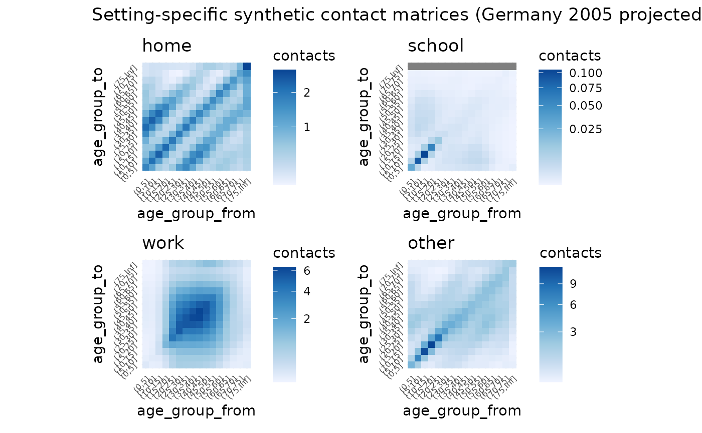
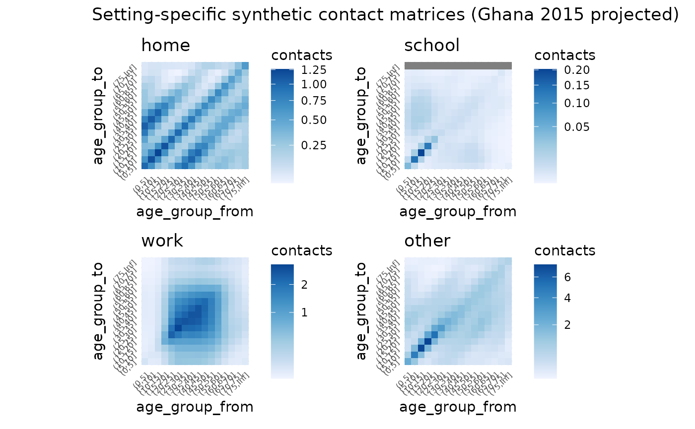
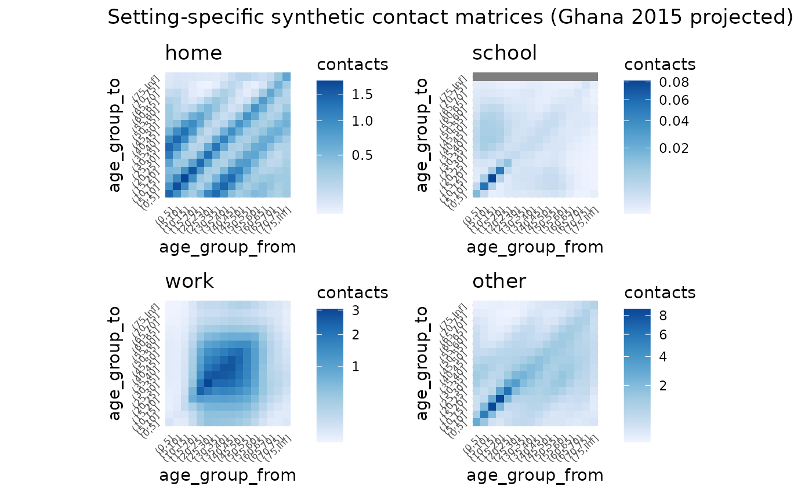
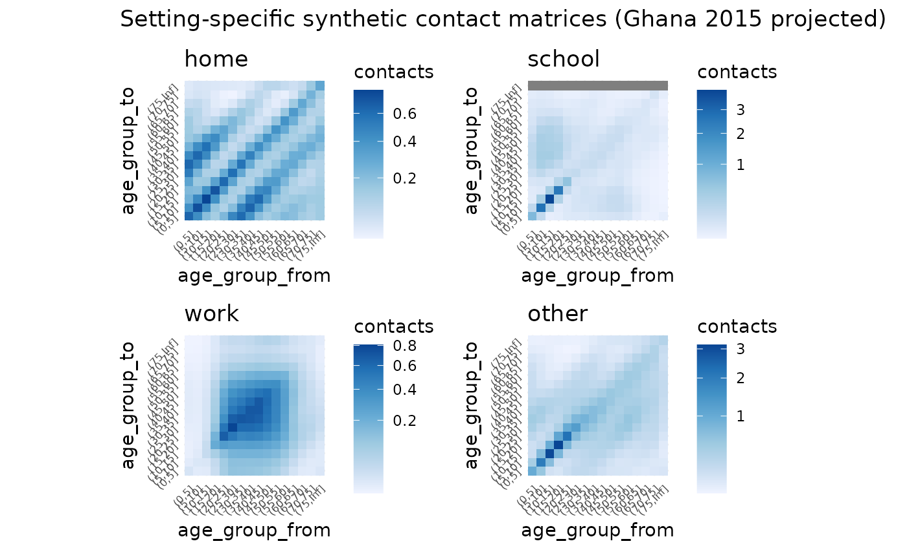

getting-started
getting-started.Rmd
library(conmat)
library(socialmixr)
#>
#> Attaching package: 'socialmixr'
#> The following object is masked from 'package:utils':
#>
#> cite
library(ggplot2)
library(dplyr)
#>
#> Attaching package: 'dplyr'
#> The following objects are masked from 'package:stats':
#>
#> filter, lag
#> The following objects are masked from 'package:base':
#>
#> intersect, setdiff, setequal, union
library(tidyr)
library(mgcv)
#> Loading required package: nlme
#>
#> Attaching package: 'nlme'
#> The following object is masked from 'package:dplyr':
#>
#> collapse
#> This is mgcv 1.8-36. For overview type 'help("mgcv-package")'.
library(patchwork)
# build synthetic age-structured contact matrices with GAMs
# analysis of polymod data
# set age breaks
age_breaks_5y <- c(seq(0, 75, by = 5), Inf)
age_breaks_1y <- c(seq(0, 100, by = 1), Inf)
# fit a single overall contact model to polymod
m_all <- fit_single_contact_model(
contact_data = get_polymod_contact_data("all"),
population = get_polymod_population()
)
m_all
#>
#> Family: poisson
#> Link function: log
#>
#> Formula:
#> contacts ~ stats::offset(log(pop_age_to)) + s(age_to) + s(age_from) +
#> s(abs(age_from - age_to)) + s(abs(age_from - age_to), age_from) +
#> school_probability + work_probability
#>
#> Estimated degrees of freedom:
#> 8.51 8.99 8.73 26.91 total = 57.14
#>
#> fREML score: 21722.78
# predict contacts at 1y and 5y resolutions for inspection
synthetic_all_5y <- predict_contacts(
model = m_all,
population = get_polymod_population(),
age_breaks = age_breaks_5y
) %>%
predictions_to_matrix()
synthetic_all_5y
#> (0,5] (5,10] (10,15] (15,20] (20,25] (25,30] (30,35]
#> (0,5] 2.8353758 1.0332449 0.2784703 0.2576707 0.4641461 0.8591803 1.1352133
#> (5,10] 1.1021721 6.5922707 1.7017862 0.3185406 0.3056129 0.6156187 1.1571992
#> (10,15] 0.1929907 1.5156399 8.9514001 1.7564653 0.3432278 0.3701210 0.6783963
#> (15,20] 0.2073854 0.2675586 1.5866367 7.1066345 1.7116674 0.5559588 0.5783190
#> (20,25] 0.4102032 0.3427576 0.4172901 1.3314067 4.3863043 1.7447420 0.9095556
#> (25,30] 0.5417202 0.5441166 0.5629381 0.6371544 1.2429023 2.5459450 1.6670538
#> (30,35] 0.5976280 0.6515996 0.6966267 0.7555356 0.9674708 1.5043978 1.9873533
#> (35,40] 0.5811378 0.7708341 0.8068280 0.7700919 0.9145908 1.3753669 1.9323143
#> (40,45] 0.4318784 0.7048685 0.9262916 0.8713311 0.7975485 0.9840010 1.4971384
#> (45,50] 0.3256597 0.4727772 0.7870497 1.0042841 0.9786546 0.8930259 0.9718767
#> (50,55] 0.3317265 0.3424162 0.4893027 0.7789837 1.0989308 1.2091195 1.0765184
#> (55,60] 0.3403293 0.3559141 0.3565919 0.4434508 0.7070548 1.1012268 1.2721660
#> (60,65] 0.2414935 0.3635756 0.3663620 0.3263721 0.3777005 0.5792787 0.8626593
#> (65,70] 0.1472504 0.2521603 0.3333708 0.3286291 0.3188590 0.3733988 0.5027317
#> (70,75] 0.1494669 0.1638965 0.2014225 0.2473029 0.2986417 0.3609889 0.4387190
#> (75,Inf] 0.3274274 0.2736638 0.1895094 0.1686184 0.1817247 0.2053938 0.2603103
#> (35,40] (40,45] (45,50] (50,55] (55,60] (60,65] (65,70]
#> (0,5] 0.9544487 0.6356679 0.4456567 0.3782284 0.3625860 0.3295634 0.2468398
#> (5,10] 1.3368100 0.9623173 0.5695839 0.3577252 0.2647629 0.2219609 0.1884553
#> (10,15] 1.0735469 1.0676779 0.7210967 0.4094695 0.2363449 0.1667477 0.1443593
#> (15,20] 0.8224870 1.0145913 0.9031165 0.5939911 0.3206150 0.1771755 0.1258432
#> (20,25] 0.8622728 0.9412833 0.9432175 0.7722706 0.4861582 0.2538698 0.1377871
#> (25,30] 1.1425467 0.9981287 0.9447940 0.8467084 0.6403090 0.3865867 0.1966476
#> (30,35] 1.6117553 1.1732204 0.9427958 0.8295275 0.7170142 0.5401605 0.3234505
#> (35,40] 1.9628209 1.5501721 1.0527069 0.7480684 0.6116646 0.5440882 0.4409124
#> (40,45] 1.9903450 1.9382284 1.3862229 0.8094127 0.4831323 0.3701463 0.3578929
#> (45,50] 1.2913229 1.7062231 1.7620321 1.1722678 0.5764965 0.2969843 0.2267305
#> (50,55] 0.9717874 1.1093324 1.4487013 1.5198344 0.9538182 0.4359428 0.2222847
#> (55,60] 1.0889254 0.9196511 1.0123623 1.2745404 1.2350761 0.7334373 0.3426985
#> (60,65] 0.9594979 0.8387710 0.7620776 0.8630302 1.0260758 0.9717312 0.5427751
#> (65,70] 0.6366331 0.6654998 0.6097194 0.5861309 0.6464817 0.7865291 0.8428748
#> (70,75] 0.5258492 0.5978296 0.5936460 0.5137001 0.4340067 0.4407587 0.6262201
#> (75,Inf] 0.3246677 0.3873139 0.4431720 0.4337284 0.3271729 0.2191473 0.1955324
#> (70,75] (75,Inf]
#> (0,5] 0.14510973 0.1015736
#> (5,10] 0.13668315 0.1101047
#> (10,15] 0.12525295 0.1311147
#> (15,20] 0.10963983 0.1628898
#> (20,25] 0.09586074 0.1590268
#> (25,30] 0.10275872 0.1443690
#> (30,35] 0.16123633 0.1691067
#> (35,40] 0.27468186 0.2595777
#> (40,45] 0.32242421 0.3968334
#> (45,50] 0.23505306 0.4637350
#> (50,55] 0.17029783 0.4175934
#> (55,60] 0.18337029 0.3433246
#> (60,65] 0.25307126 0.3048212
#> (65,70] 0.42185272 0.3372804
#> (70,75] 0.87294127 0.5710667
#> (75,Inf] 0.33047609 1.1489547
synthetic_all_1y <- predict_contacts(
model = m_all,
population = get_polymod_population(),
age_breaks = age_breaks_1y
) %>%
predictions_to_matrix()
# compute setting-specific and combined age matrices for polymod
synthetic_settings_5y_polymod <- extrapolate_polymod(
population = get_polymod_population()
)
# extrapolate to other contexts
synthetic_settings_5y_italy_2005 <- extrapolate_polymod(
population = wpp_age("Italy", "2005")
)
synthetic_settings_5y_germany_2005 <- extrapolate_polymod(
population = wpp_age("Germany", "2005")
)
synthetic_settings_5y_bolivia_2015 <- extrapolate_polymod(
population = wpp_age("Bolivia", "2015")
)
synthetic_settings_5y_ghana_2015 <- extrapolate_polymod(
population = wpp_age("Ghana", "2015")
)
# empirical 5y polymod matrix
empirical_all_5y <- contact_matrix(
survey = polymod,
age.limits = seq(0, 75, by = 5),
symmetric = FALSE,
split = FALSE,
missing.participant.age = "remove",
missing.contact.age = "remove"
)$matrix
#> Using POLYMOD social contact data. To cite this in a publication, use the 'cite' function
# plot setting-specific matrices
# synthetic_setting_specific_polymod.png
plot_setting_matrices(synthetic_settings_5y_polymod)
# synthetic_setting_specific_italy.png
plot_setting_matrices(
synthetic_settings_5y_italy_2005,
title = "Setting-specific synthetic contact matrices (Italy 2005 projected)"
)
# synthetic_setting_specific_germany.png
plot_setting_matrices(
synthetic_settings_5y_germany_2005,
title = "Setting-specific synthetic contact matrices (Germany 2005 projected)"
)
# synthetic_setting_specific_bolivia.png
plot_setting_matrices(
synthetic_settings_5y_bolivia_2015,
title = "Setting-specific synthetic contact matrices (Bolivia 2015 projected)"
)
# synthetic_setting_specific_ghana.png
plot_setting_matrices(
synthetic_settings_5y_ghana_2015,
title = "Setting-specific synthetic contact matrices (Ghana 2015 projected)"
)
# empirical_vs_synthetic.png
# plot empirical vs synthetic matrices
plot_matrix(empirical_all_5y) +
ggtitle("empirical (socialmixr)") +
plot_matrix(synthetic_settings_5y_polymod$all) +
ggtitle("synthetic by setting, combined") +
plot_matrix(synthetic_all_5y) +
ggtitle("synthetic all at once") +
plot_matrix(synthetic_all_1y) +
ggtitle("synthetic all at once (1y)") +
theme(axis.text = element_blank()) +
plot_layout(ncol = 2) +
plot_annotation(
title = "Empirical vs synthetic matrices (all polymod data)"
)
# polymod_raw_settings.png
# visualise empirical contact rate estimates
bind_rows(
home = get_polymod_contact_data("home"),
school = get_polymod_contact_data("school"),
work = get_polymod_contact_data("work"),
other = get_polymod_contact_data("other"),
.id = "setting"
) %>%
mutate(
rate = contacts / participants,
setting = factor(
setting,
levels = c(
"home", "school", "work", "other"
)
)
) %>%
group_by(
setting
) %>%
mutate(
`relative contact rate` = rate / max(rate)
) %>%
ungroup() %>%
ggplot(
aes(
x = age_from,
y = age_to,
fill = `relative contact rate`
)
) +
facet_wrap(
~ setting,
ncol = 2,
scales = "free"
) +
geom_tile() +
scale_fill_distiller(
direction = 1,
trans = "sqrt"
) +
theme_minimal()